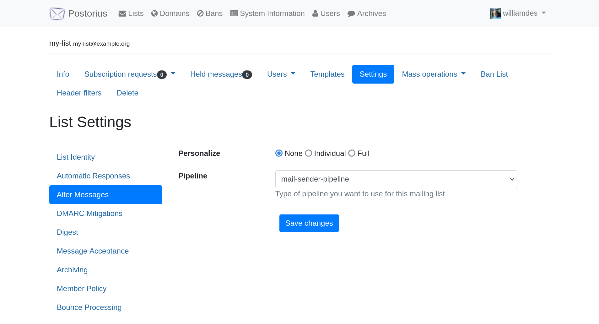

How to write a plugin/handler/pipeline for mailman3 to add/edit/remove headers of posts
In this blog post I will show you how to write a plugin that edits the headers of received mailing list posts.
Tested on Debian 12 with mailman3: 3.3.8-2~deb12u2.
Configuring the plugin in mailman
In /etc/mailman3/mailman.cfg you will need to add
[plugin.mailman_sender_plugin]
# The file will be at: /usr/lib/python3/dist-packages/mailman_sender_plugin/plugin.py
# And it needs a class named `SenderHeaderPlugin` that implements `IPlugin`.
class: mailman_sender_plugin.plugin.SenderHeaderPlugin
enabled: yes
# If you need a config file for the plugin, see: https://github.com/TIM-JYU/mailman-rest-events
# configuration: /etc/mailman3/mailman-sender-plugin.cfg
Creating the files and folders
Create a new folder for your package: /usr/lib/python3/dist-packages/mailman_sender_plugin.
The structure will be:
/usr/lib/python3/dist-packages/mailman_sender_plugin
├── handlers
│ ├── handlers.py
│ └── __init__.py
├── pipelines
│ ├── __init__.py
│ └── pipelines.py
├── __init__.py
└── plugin.py
3 directories, 6 files
__init__.py files
Files to create:
__init__.pyhandlers/__init__.pypipelines/__init__.py
Each __init__.py can be empty or have the contents:
# This file is required to make the directory a Python package.
# It can remain empty.
plugin.py
The plugin.py file has methods that do nothing:
from public import public
from zope.interface import implementer
from mailman.interfaces.plugin import IPlugin
@public
@implementer(IPlugin)
class SenderHeaderPlugin:
def pre_hook(self):
pass
def post_hook(self):
pass
@property
def resource(self):
return None
pipelines/pipelines.py
The plugin.py file has methods that do nothing:
from public import public
from mailman.interfaces.pipeline import IPipeline
from mailman.pipelines.base import BasePipeline
#from mailman.pipelines.builtin import PostingPipeline
from zope.interface import implementer
# Pipelines are list of "handlers"
# https://docs.mailman3.org/projects/mailman/en/latest/src/mailman/handlers/docs/handlers.html
# The Pipelines has to be an implementation of the IPipeline inteface
# https://gitlab.com/mailman/mailman/-/blob/master/src/mailman/interfaces/pipeline.py#L63
# Here are some example of built-in pipelines that are used by default in Mailman.
# https://gitlab.com/mailman/mailman/-/blob/master/src/mailman/pipelines/builtin.py
@public
@implementer(IPipeline)
class MailSenderPipeline(BasePipeline):
# The name of the pipeline should be unique.
name = 'mail-sender-pipeline'
# Briefly describe the pipeline so it can be shown in web frontends to users when choosing a pipeline.
description = 'Add Sender header and modify headers pipeline'
# List of handlers, in the correct order, to be used for processing the email.
# See: https://gitlab.com/mailman/mailman/-/blob/master/src/mailman/pipelines/builtin.py
# You can add your handler at the end if the order is correct for your use case
# _default_handlers = PostingPipeline._default_handlers + ('mailman-after-sent-handler')
_default_handlers = (
'validate-authenticity',
'mime-delete',
'tagger',
'member-recipients',
'avoid-duplicates',
'cleanse',
'cleanse-dkim',
'cook-headers',
'subject-prefix',
'rfc-2369',
'to-archive',
'to-digest',
'to-usenet',
'after-delivery',
'acknowledge',
# All decoration is now done in delivery.
# 'decorate',
'dmarc',
# Message decoration in delivery can break an arc signature, so sign
# in delivery after decorating.
# 'arc-sign',
# Add the Sender header
'mailman-sender-handler',
'mailman-headers-handler',
# Send it
'to-outgoing',
)
handlers/handlers.py
from public import public
from zope.interface import implementer
from mailman.interfaces.handler import IHandler
# Use this in the process function: raise DiscardMessage('Message was discarded because ...')
#from mailman.interfaces.pipeline import (
# DiscardMessage,
# RejectMessage,
#)
#import logging
#elog = logging.getLogger("mailman.error")
# Use this for logging in functions
#elog.error('My error message')
@public
@implementer(IHandler)
class SenderHeaderHandler:
"""A handler to add the Sender header to each email."""
# The name of the handler should be unique.
name = 'mailman-sender-handler'
description = 'Add the Sender header to emails.'
# Documentation for mlist can be found here: https://docs.mailman3.org/projects/mailman/en/latest/src/mailman/rest/docs/listconf.html
def process(self, mlist, msg, msgdata):
"""Add the Sender header to the email."""
# Do not add already set headers, it would exist twice afterwards
if not 'Sender' in msg:
# Add the Sender header using the mailing list post address
msg['Sender'] = mlist.posting_address
@public
@implementer(IHandler)
class MailmanHeaderCleanerHandler:
"""A handler to edit the mailman headers for each email."""
# The name of the handler should be unique.
name = 'mailman-headers-handler'
description = 'Edit the mailman header for emails.'
def process(self, mlist, msg, msgdata):
"""Edit the mailman header for emails."""
# Remove some headers
del msg['X-Mailman-Version']
del msg['X-Mailman-Rule-Misses']
del msg['X-Mailman-Rule-Hits']
Finalize the setup
You need to restart the mailman3 service: service mailman3 restart.
Then you can check everything is loaded by running mailman shell or sudo -S -u lists-user mailman shell:
mailman shell
Welcome to the GNU Mailman shell
>>> config.plugins
{'mailman_sender_plugin': <mailman_sender_plugin.plugin.SenderHeaderPlugin object at 0xcafefffffff1>}
>>> config.handlers
{'to-usenet': ..., 'acknowledge': ..., [...], 'cleanse-dkim': ..., 'mailman-sender-handler': <mailman_sender_plugin.handlers.handlers.SenderHeaderHandler object at 0xcafefffffff2>, 'mailman-headers-handler': <mailman_sender_plugin.handlers.handlers.MailmanHeaderCleanerHandler object at 0xcafefffffff3>}
>>> config.pipelines
{'default-owner-pipeline': <mailman.pipelines.builtin.OwnerPipeline object at 0xcafefffffff4>, 'default-posting-pipeline': <mailman.pipelines.builtin.PostingPipeline object at 0xcafefffffff5>, 'virgin': <mailman.pipelines.virgin.VirginPipeline object at 0xcafefffffff6>, 'mail-sender-pipeline': <mailman_sender_plugin.pipelines.pipelines.MailSenderPipeline object at 0xcafefffffff7>}
Change the pipeline in the mailing list settings
Go to: "Settings" "Alter Messages " and change "Pipeline" to "mail-sender-pipeline". The save the settings and send a test email to valide that all works fine.
Note: the HTML of the webpage was altered to only show the setting you need to change.

For the Sender header
You might want to set the "DMARC mitigation action" to none since you use a Sender header.
Go to: "Settings" > "DMARC Mitigations" on the list and set "DMARC mitigation action" to "No DMARC mitigations".
This will stop changing the From: field of emails.
References: